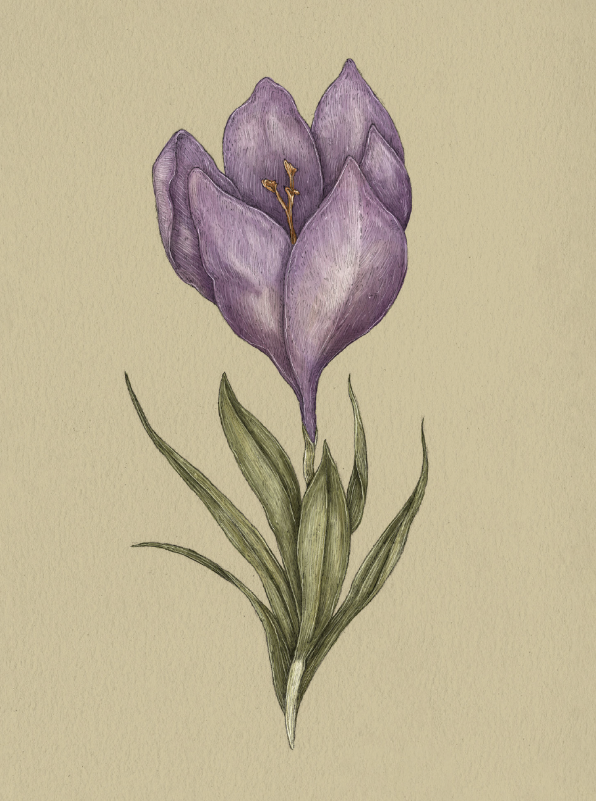

Plate CROCUS
The Language of Flowers
Crocus Study

Crocus
Crocus
Definition: A flower associated in floriography with cheerfulness and youthful glee.
Meaning
- Cheerfulness
- Youthful glee
Origin
Crocuses are some of the first flowers to bloom in the frost and snow; their cheerful petals and
sunshine yellow filaments emerge to welcome spring. Perennial flowers that pop up each year, crocuses
are also associated with youthful glee.
Pair With
- Daisy for the start of a new school year
- Buttercup as a gift for a charming young friend